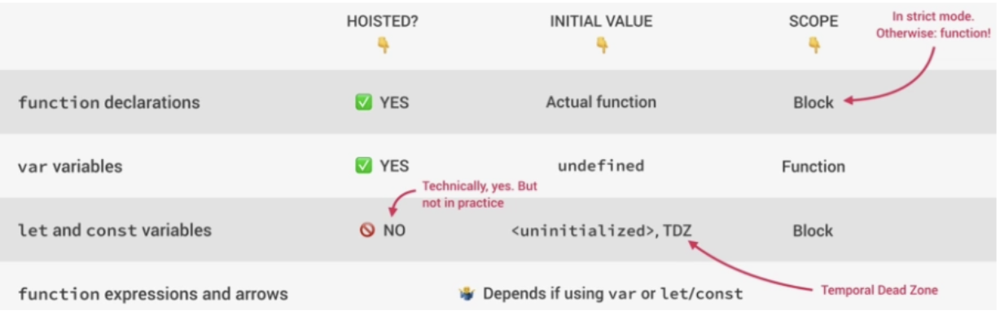

Hoisting
- Inside Execution Context we have 3 things, variable environment, scope chain, this keyword.
- Hoisting: Some types of variables accessible/usable before they are declared.
- Some people think that they are magically lifted to top of the scope, because it seems so.
- Instead, behind the scenes, the code is basically scanned for variable declarations before it is executed.
- This happens during the so-called creation phase of the execution context
- Then for each variable that is found in the code, a new property is created in a variable environment object. That's how hoisting really works.
- Hoisting does not work the same for all variable types.
